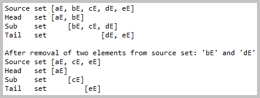
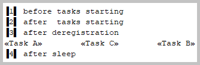

Sealed Class
Array ● Set ● List ● Map ● Deque ● Collectors
Instant ● Duration ● LocalDateTime ● ZonedDateTime ● DateFormat
File ● Zip File ● Properties ● Temporary File ● XML File ● SimpleFileVisitor
Lambda Expressions ● (Composed) Function ● Consumer ● Supplier ● MethodHandle
System Properties ● ProcessHandle ● ProcessBuilder ● ClassLoader ● FileStore
Flow ● Publisher ● Subscriber ● Processor ● HttpServer ● HttpClient
Collectors ● Function ● Consumer ● Supplier ● Comparator
Pattern ● Matcher ● Scanner ● Stream Filtering
Comparable ● Comparator ● Locale ● Collator
Collectors ● Join ● Count ● Partition ● Traverse ● Queue ● Deque ● Flatten
Skip ● Limit ● Drop ● Take ● Filter ● Match
Collectors ● ZonedDateTime
CyclicBarrier ● Phaser ● ExecutorService ● CompletableFuture
Runnable ● Callable ● FutureTask ● ExecutorService ● ForkJoinPool ● ThreadFactory
HttpClient ● HttpRequest ● HttpResponse ● CompletableFuture
HttpServer ● HttpExchange
Socket ● SSLSocket ● ServerSocket ● SSLServerSocket ● ExecutorService ● Phaser
Class File Disassembler 'javap' ● JVM ● GC ● Cryptographic Keys ● Trusted Certificates
Sealed Class
Array ● Set ● List ● Map ● Deque ● Collectors
Instant ● Duration ● LocalDateTime ● ZonedDateTime ● DateFormat
File ● Zip File ● Properties ● Temporary File ● XML File ● SimpleFileVisitor
Lambda Expressions ● (Composed) Function ● Consumer ● Supplier ● MethodHandle
System Properties ● ProcessHandle ● ProcessBuilder ● ClassLoader ● FileStore
Flow ● Publisher ● Subscriber ● Processor ● HttpServer ● HttpClient
Collectors ● Function ● Consumer ● Supplier ● Comparator
Pattern ● Matcher ● Scanner ● Stream Filtering
Comparable ● Comparator ● Locale ● Collator
Collectors ● Join ● Count ● Partition ● Traverse ● Queue ● Deque ● Flatten
Skip ● Limit ● Drop ● Take ● Filter ● Match
Collectors ● ZonedDateTime
CyclicBarrier ● Phaser ● ExecutorService ● CompletableFuture
Runnable ● Callable ● FutureTask ● ExecutorService ● ForkJoinPool ● ThreadFactory
HttpClient ● HttpRequest ● HttpResponse ● CompletableFuture
HttpServer ● HttpExchange
Socket ● SSLSocket ● ServerSocket ● SSLServerSocket ● ExecutorService ● Phaser
Class File Disassembler 'javap' ● JVM ● GC ● Cryptographic Keys ● Trusted CertificatesThere are no external dependencies in Maven pom.xml. In this project only Java is used.
Java source code. Packages:

 kp.about.basics
kp.about.basics
kp.collections
kp.dates
kp.files
kp.methods
kp.processes
kp.reactive.streams
kp.records
kp.regex
kp.sorting
kp.streams.collecting
kp.streams.fragmentation
kp.streams.teeing
kp.synchronizers
kp.tasks
kp.web.httpclient
kp.web.httpserver
kp.web.sockets
Action:

 Launch batch file
'01 Build And Run Menu.bat'
and select menu item 'Basics'.
Launch batch file
'01 Build And Run Menu.bat'
and select menu item 'Basics'.
It starts the application kp.about.basics.ApplicationForBasics.
1.1. Interface
kp.about.basics.Var
Method kp.about.basics.Var::launch

 Console log from 'Var::launch' method.
Console log from 'Var::launch' method.
1.2. Class
kp.about.basics.inheritance.PatternMatching
Implementing sealed classes.
Method kp.about.basics.inheritance.PatternMatching::withoutAnyCast

Console log from 'PatternMatching::withoutAnyCast' method.
Action:
Launch batch file
'01 Build And Run Menu.bat'
and select menu item 'Collections'.
It starts the application kp.collections.ApplicationForCollections.
2.1. Class
kp.collections.ApplicationForCollections
Method kp.collections.ApplicationForCollections::showArraysMismatch

Console log from 'ApplicationForCollections::showArraysMismatch' method.
Method kp.collections.ApplicationForCollections::countLetterFrequency

Console log from 'ApplicationForCollections::countLetterFrequency' method.
2.2. Class
kp.collections.Apportions
Method kp.collections.Apportions::apportionSet

Console log from 'Apportions::apportionSet' method.
Method kp.collections.Apportions::apportionMapAndMerge

Console log from 'Apportions::apportionMapAndMerge' method.
2.3. Class
kp.collections.preferable.Preferable
Method kp.collections.preferable.Preferable::preferArrayDeque

Console log from 'Preferable::preferArrayDeque' method.
Method kp.collections.preferable.Preferable::preferLinkedHashMapAndLinkedHashSet

Console log from 'Preferable::preferLinkedHashMapAndLinkedHashSet' method.
Method kp.collections.preferable.Preferable::preferCopyOnWriteArrayList

Console log from 'Preferable::preferCopyOnWriteArrayList' method.
Method kp.collections.preferable.Preferable::preferConcurrentHashMap

Console log from 'Preferable::preferConcurrentHashMap' method.
Method kp.collections.preferable.Preferable::preferConcurrentSkipListMapAndConcurrentSkipListSet

Console log from 'Preferable::preferConcurrentSkipListMapAndConcurrentSkipListSet' method.
2.4. Class
kp.collections.Multidimensionals
Method kp.collections.Multidimensionals::multidimensionalArrayToMultidimensionalList

Console log from 'Multidimensionals::multidimensionalArrayToMultidimensionalList' method.
2.5. Class
kp.collections.ApplicationForCollections
Method kp.collections.ApplicationForCollections::iterateOverVector

Console log from 'ApplicationForCollections::iterateOverVector' method.
Action:
Launch batch file
'01 Build And Run Menu.bat'
and select menu item 'Dates And Times'.
It starts the application kp.dates.ApplicationForDatesAndTimes.
3.1. Class
kp.dates.DatesAndTimesAggregation
Method kp.dates.DatesAndTimesAggregation::aggregateLeapDays

Console log from 'DatesAndTimesAggregation::aggregateLeapDays' method.
Method kp.dates.DatesAndTimesAggregation::aggregateOneYearSeconds

Console log from 'DatesAndTimesAggregation::aggregateOneYearSeconds' method.
3.2. Class
kp.dates.DatesAndTimesChanging
Method kp.dates.DatesAndTimesChanging::formatDate

Console log from 'DatesAndTimesChanging::formatDate' method.
Method kp.dates.DatesAndTimesChanging::convertDateToAndFro

Console log from 'DatesAndTimesChanging::convertDateToAndFro' method.
Method kp.dates.DatesAndTimesChanging::adjustDate

Console log from 'DatesAndTimesChanging::adjustDate' method.
Method kp.dates.DatesAndTimesChanging::queryTemporalObjects

Console log from 'DatesAndTimesChanging::queryTemporalObjects' method.
Method kp.dates.DatesAndTimesChanging::calculateAmountOfTimeBetween

Console log from 'DatesAndTimesChanging::calculateAmountOfTimeBetween' method.
Method kp.dates.DatesAndTimesChanging::addToOrSubtractFromInstant

Console log from 'DatesAndTimesChanging::addToOrSubtractFromInstant' method.
Method kp.dates.DatesAndTimesChanging::fragmentizeTime

Console log from 'DatesAndTimesChanging::fragmentizeTime' method.
Action:
Launch batch file
'01 Build And Run Menu.bat'
and select menu item 'Files'.
It starts the application kp.files.ApplicationForFiles.
4.1. Class
kp.files.FilesAndZipFiles
Method kp.files.FilesAndZipFiles::readFiles

Console log from 'FilesAndZipFiles::readFiles' method.
Method kp.files.FilesAndZipFiles::listFiles

Console log from 'FilesAndZipFiles::listFiles' method.
Method kp.files.FilesAndZipFiles::readZipFiles

Console log from 'FilesAndZipFiles::readZipFiles' method.
Method kp.files.FilesAndZipFiles::listFilesInZipFile

Console log from 'FilesAndZipFiles::listFilesInZipFile' method.
4.2. Class
kp.files.PropertyFiles
Method kp.files.PropertyFiles::readProperties

Console log from 'PropertyFiles::readProperties' method.
4.3. Class
kp.files.TemporaryFilesAndZipFiles
Method kp.files.TemporaryFilesAndZipFiles::writeAndReadTemporaryFiles

Console log from 'TemporaryFilesAndZipFiles::writeAndReadTemporaryFiles' method.
Method kp.files.TemporaryFilesAndZipFiles::writeAndReadTemporaryZipFiles

Console log from 'TemporaryFilesAndZipFiles::writeAndReadTemporaryZipFiles' method.
4.4. Class
kp.files.XmlFiles
Method kp.files.XmlFiles::readXmlFiles

Console log from 'XmlFiles::readXmlFiles' method.
4.5. Class
kp.files.visitors.VisitorWrapper
Method kp.files.visitors.VisitorWrapper::searchKeywordsInFiles

Console log from 'VisitorWrapper::searchKeywordsInFiles' method.
Action:
Launch batch file
'01 Build And Run Menu.bat'
and select menu item 'Methods'.
It starts the application kp.methods.ApplicationForMethods.
5.1. Interface
kp.methods.arity.Arity
Method kp.methods.arity.Arity::methodWithFiveFunctionParameters

Console log from 'Arity::methodWithFiveFunctionParameters' method.
Method kp.methods.arity.Arity::methodWithConsumerParameter

Console log from 'Arity::methodWithConsumerParameter' method.
Method kp.methods.arity.Arity::methodWithFunctionParameter

Console log from 'Arity::methodWithFunctionParameter' method.
5.2. Class
kp.methods.calling.Contrasting
Method kp.methods.calling.Contrasting::usingLocalClassVersusAnonymousClassVersusLambdaExpression

Console log from 'Contrasting::usingLocalClassVersusAnonymousClassVersusLambdaExpression' method.
Method kp.methods.calling.Contrasting::lambdaAccessingVersusCallingDirectly

Console log from 'Contrasting::lambdaAccessingVersusCallingDirectly' method.
5.3. Interface
kp.methods.composing.FunctionComposer
Method kp.methods.composing.FunctionComposer::composeFunctions

Console log from 'FunctionComposer::composeFunctions' method.
5.4. Interface
kp.methods.functional.FunctionalInterfaceWrapper
Method kp.methods.functional.FunctionalInterfaceWrapper::launchFunctionalInterface

Console log from 'FunctionalInterfaceWrapper::launchFunctionalInterface' method.
5.5. Class
kp.methods.invoking.FindHandleAndInvoke
Method kp.methods.invoking.FindHandleAndInvoke::invokeObjectMethods

Console log from 'FindHandleAndInvoke::invokeObjectMethods' method.
Method kp.methods.invoking.FindHandleAndInvoke::invokeFirstSetterThenGetter

Console log from 'FindHandleAndInvoke::invokeFirstSetterThenGetter' method.
Method kp.methods.invoking.FindHandleAndInvoke::replaceArrayElement

Console log from 'FindHandleAndInvoke::replaceArrayElement' method.
5.6. Interface
kp.methods.proxy.ProxyAndInvoke
Method kp.methods.proxy.ProxyAndInvoke::invokeMethod

Console log from 'ProxyAndInvoke::invokeMethod' method.
Action:
Launch batch file
'01 Build And Run Menu.bat'
and select menu item 'Processes'.
It starts the application kp.processes.ApplicationForProcesses.
6.1. Class
kp.processes.Reporter
Method kp.processes.Reporter::showElapsed

Console log from 'Reporter::showElapsed' method.
Method kp.processes.Reporter::listSystemProperties

Console log from 'Reporter::listSystemProperties' method.
Method kp.processes.Reporter::showEnvironment

Console log from 'Reporter::showEnvironment' method.
Method kp.processes.Reporter::showClassloaders

Console log from 'Reporter::showClassloaders' method.
Method kp.processes.Reporter::showDirectories

Console log from 'Reporter::showDirectories' method.
Method kp.processes.Reporter::showFileStores

Console log from 'Reporter::showFileStores' method.
6.2. Class
kp.processes.ApplicationForProcesses
Method kp.processes.ApplicationForProcesses::startProcess

Console log from 'ApplicationForProcesses::startProcess' method.
Action:
Launch batch file
'01 Build And Run Menu.bat'
and select menu item 'Reactive Streams'.
It starts the application kp.reactive.streams.ApplicationForReactiveStreams.
7.1. Class
kp.reactive.streams.FlowLauncher
Method kp.reactive.streams.FlowLauncher::launchSubmissionPublisherAndSubscriber

Console log from 'FlowLauncher::launchSubmissionPublisherAndSubscriber' method.
Method kp.reactive.streams.FlowLauncher::launchPeriodicPublisherAndSubscriber

Console log from 'FlowLauncher::launchPeriodicPublisherAndSubscriber' method.
Method kp.reactive.streams.FlowLauncher::launchSubmissionPublisherAndProcessor

Console log from 'FlowLauncher::launchSubmissionPublisherAndProcessor' method.
Method kp.reactive.streams.FlowLauncher::launchPublisherImplAndSubscriber

Console log from 'FlowLauncher::launchPublisherImplAndSubscriber' method.
7.2. Class
kp.reactive.streams.WebFlowLauncher
Method kp.reactive.streams.WebFlowLauncher::receiveResponseUsingLineSubscriber

Console log from 'WebFlowLauncher::receiveResponseUsingLineSubscriber' method.
Method kp.reactive.streams.WebFlowLauncher::receiveResponseUsingSubscriberForByteBufferList

Console log from 'WebFlowLauncher::receiveResponseUsingSubscriberForByteBufferList' method.
Method kp.reactive.streams.WebFlowLauncher::receiveResponseUsingPublisher

Console log from 'WebFlowLauncher::receiveResponseUsingPublisher' method.
Action:
Launch batch file
'01 Build And Run Menu.bat'
and select menu item 'Records'.
It starts the application kp.records.ApplicationForRecords.
8.1. Class
kp.records.ApplicationForRecords
Method kp.records.ApplicationForRecords::processUnicodeScripts

Console log from 'ApplicationForRecords::processUnicodeScripts' method.
Method kp.records.ApplicationForRecords::processThings

Console log from 'ApplicationForRecords::processThings' method.
Method kp.records.ApplicationForRecords::processArticles

Console log from 'ApplicationForRecords::processArticles' method.
Method kp.records.ApplicationForRecords::processCongruence

Console log from 'ApplicationForRecords::processCongruence' method.
Method kp.records.ApplicationForRecords::compareConstructing

Console log from 'ApplicationForRecords::compareConstructing' method.
Method kp.records.ApplicationForRecords::processMultiplets

Console log from 'ApplicationForRecords::processMultiplets' method.
Method kp.records.ApplicationForRecords::processAlphabet

Console log from 'ApplicationForRecords::processAlphabet' method.
Method kp.records.ApplicationForRecords::processMoney

Console log from 'ApplicationForRecords::processMoney' method.
Method kp.records.ApplicationForRecords::processBorders

Console log from 'ApplicationForRecords::processBorders' method.
Action:
Launch batch file
'01 Build And Run Menu.bat'
and select menu item 'Regex'.
It starts the application kp.regex.ApplicationForRegex.
9.1. Class
kp.regex.ApplicationForRegex.
Method kp.regex.ApplicationForRegex::showGreedyReluctantPossessiveQuantifiers

Console log from 'ApplicationForRegex::showGreedyReluctantPossessiveQuantifiers' method.
Method kp.regex.ApplicationForRegex::showNamedCapturingGroups

Console log from 'ApplicationForRegex::showNamedCapturingGroups' method.
9.2. Class
kp.regex.StreamFiltering.
Method kp.regex.StreamFiltering::filterWithMatchedRegexPredicateOne

Console log from 'StreamFiltering::filterWithMatchedRegexPredicateOne' method.
Method kp.regex.StreamFiltering::filterWithMatchedRegexPredicateTwo

Console log from 'StreamFiltering::filterWithMatchedRegexPredicateTwo' method.
Method kp.regex.StreamFiltering::filterWithPatternPredicates

Console log from 'StreamFiltering::filterWithPatternPredicates' method.
9.3. Class
kp.regex.ReplacingWithMatcher.
Method kp.regex.ReplacingWithMatcher::replaceAllInSingleLine

Console log from 'ReplacingWithMatcher::replaceAllInSingleLine' method.
Method kp.regex.ReplacingWithMatcher::replaceAllInMultiline

Console log from 'ReplacingWithMatcher::replaceAllInMultiline' method.
Method kp.regex.ReplacingWithMatcher::appendReplacement

Console log from 'ReplacingWithMatcher::appendReplacement' method.
9.4. Class
kp.regex.Tokenization.
Method kp.regex.Tokenization::tokenizeWithPattern

Console log from 'Tokenization::tokenizeWithPattern' method.
Method kp.regex.Tokenization::tokenizeWithScanner

Console log from 'Tokenization::tokenizeWithScanner' method.
Method kp.regex.Tokenization::tokenizeWithScannerTextFromUrl

Console log from 'Tokenization::tokenizeWithScannerTextFromUrl' method.
Action:
Launch batch file
'01 Build And Run Menu.bat'
and select menu item 'Sorting'.
It starts the application kp.sorting.ApplicationForSorting.
10.1. Class
kp.sorting.ApplicationForSorting.
Method kp.sorting.ApplicationForSorting::sortStringArray

Console log from 'ApplicationForSorting::sortStringArray' method.
Method kp.sorting.ApplicationForSorting::sortIntegerArray

Console log from 'ApplicationForSorting::sortIntegerArray' method.
Method kp.sorting.ApplicationForSorting::sortStreamWithNaturalOrder

Console log from 'ApplicationForSorting::sortStreamWithNaturalOrder' method.
Method kp.sorting.ApplicationForSorting::sortStreamWithLocale

Console log from 'ApplicationForSorting::sortStreamWithLocale' method.
Method kp.sorting.ApplicationForSorting::sortMapByKeyOrByValue

Console log from 'ApplicationForSorting::sortMapByKeyOrByValue' method.
Method kp.sorting.ApplicationForSorting::sortWithComparableAndComparator

Console log from 'ApplicationForSorting::sortWithComparableAndComparator' method.
Action:
Launch batch file
'01 Build And Run Menu.bat'
and select menu item 'Streams Collecting'.
It starts the application kp.streams.collecting.ApplicationForStreamsCollecting.
11.1. Class
kp.streams.collecting.ApplicationForStreamsCollecting.
Method kp.streams.collecting.ApplicationForStreamsCollecting::useStringJoiners

Console log from 'ApplicationForStreamsCollecting::useStringJoiners' method.
Method kp.streams.collecting.ApplicationForStreamsCollecting::collectStream

Console log from 'ApplicationForStreamsCollecting::collectStream' method.
Method kp.streams.collecting.ApplicationForStreamsCollecting::countWithoutPipelineExecution

Console log from 'ApplicationForStreamsCollecting::countWithoutPipelineExecution' method.
Method kp.streams.collecting.ApplicationForStreamsCollecting::groupByDifferenceFromExpected

Console log from 'ApplicationForStreamsCollecting::groupByDifferenceFromExpected' method.
11.2. Class
kp.streams.collecting.Iterating.
Method kp.streams.collecting.Iterating::process

Console log from 'Iterating::process' method.
11.3. Class
kp.streams.collecting.NullsAndOptionals.
Method kp.streams.collecting.NullsAndOptionals::concatenateWithStreamFromNullable

Console log from 'NullsAndOptionals::concatenateWithStreamFromNullable' method.
Method kp.streams.collecting.NullsAndOptionals::nullsInStreamWithoutOptionals

Console log from 'NullsAndOptionals::nullsInStreamWithoutOptionals' method.
Method kp.streams.collecting.NullsAndOptionals::nullsInStreamWithOptionals

Console log from 'NullsAndOptionals::nullsInStreamWithOptionals' method.
11.4. Class
kp.streams.collecting.Traversing.
Method kp.streams.collecting.Traversing::traverseListWithIterator

Console log from 'Traversing::traverseListWithIterator' method.
Method kp.streams.collecting.Traversing::traverseQueue

Console log from 'Traversing::traverseQueue' method.
Method kp.streams.collecting.Traversing::traverseDeque

Console log from 'Traversing::traverseDeque' method.
11.5. Class
kp.streams.collecting.Flattening.
Method kp.streams.collecting.Flattening::transformsMultidimensionalToFlatForBytes

Console log from 'Flattening::transformsMultidimensionalToFlatForBytes' method.
Method kp.streams.collecting.Flattening::transformMultidimensionalToFlatForStrings

Console log from 'Flattening::transformMultidimensionalToFlatForStrings' method.
Method kp.streams.collecting.Flattening::compareMapMultiVersusFlatMapForNumbers

Console log from 'Flattening::compareMapMultiVersusFlatMapForNumbers' method.
Method kp.streams.collecting.Flattening::compareMapMultiVersusFlatMapForStrings

Console log from 'Flattening::compareMapMultiVersusFlatMapForStrings' method.
Action:
Launch batch file
'01 Build And Run Menu.bat'
and select menu item 'Streams Fragmentation'.
It starts the application kp.streams.fragmentation.ApplicationForStreamsFragmentation.
12.1. Class
kp.streams.fragmentation.ApplicationForStreamsFragmentation.
Method kp.streams.fragmentation.ApplicationForStreamsFragmentation::skipAndLimit

Console log from 'ApplicationForStreamsFragmentation::skipAndLimit' method.
Method kp.streams.fragmentation.ApplicationForStreamsFragmentation::dropAndTake

Console log from 'ApplicationForStreamsFragmentation::dropAndTake' method.
Method kp.streams.fragmentation.ApplicationForStreamsFragmentation::filter

Console log from 'ApplicationForStreamsFragmentation::filter' method.
Method kp.streams.fragmentation.ApplicationForStreamsFragmentation::match

Console log from 'ApplicationForStreamsFragmentation::match' method.
Action:
Launch batch file
'01 Build And Run Menu.bat'
and select menu item 'Streams Teeing'.
It starts the application kp.streams.teeing.ApplicationForCollectorsTeeing.
13.1. Class
kp.streams.teeing.ApplicationForCollectorsTeeing.
Method kp.streams.teeing.ApplicationForCollectorsTeeing::processJoining

Console log from 'ApplicationForCollectorsTeeing::processJoining' method.
Method kp.streams.teeing.ApplicationForCollectorsTeeing::processZonedDateTime

Console log from 'ApplicationForCollectorsTeeing::processZonedDateTime' method.
Method kp.streams.teeing.ApplicationForCollectorsTeeing::processAtomicSimple

Console log from 'ApplicationForCollectorsTeeing::processAtomicSimple' method.
Method kp.streams.teeing.ApplicationForCollectorsTeeing::processAtomicDetailed

Console log from 'ApplicationForCollectorsTeeing::processAtomicDetailed' method.
Action:
Launch batch file
'01 Build And Run Menu.bat'
and select menu item 'Synchronizers'.
It starts the application kp.synchronizers.ApplicationForSynchronizers.
14.1. Class
kp.synchronizers.CyclicBarrierLauncher.
Method kp.synchronizers.CyclicBarrierLauncher::launchCyclicBarrierThreeTimes

Console log from 'CyclicBarrierLauncher::launchCyclicBarrierThreeTimes' method.
14.2. Class
kp.synchronizers.PhaserLaucher.
Method kp.synchronizers.PhaserLaucher::usePhaserToOpenGateForTasks

Console log from 'PhaserLaucher::usePhaserToOpenGateForTasks' method.
Method kp.synchronizers.PhaserLaucher::usePhaserToAwaitOtherTasks

Console log from 'PhaserLaucher::usePhaserToAwaitOtherTasks' method.
Action:
Launch batch file
'01 Build And Run Menu.bat'
and select menu item 'Tasks'.
It starts the application kp.tasks.ApplicationForTasks.
15.1. Class
kp.tasks.ApplicationForTasks.
Method kp.tasks.ApplicationForTasks::compareExecutors

Console log from 'ApplicationForTasks::compareExecutors' method.
Method kp.tasks.ApplicationForTasks::completeCompletableFutures

Console log from 'ApplicationForTasks::completeCompletableFutures' method.
Method kp.tasks.ApplicationForTasks::executeFutureTasks

Console log from 'ApplicationForTasks::executeFutureTasks' method.
Method kp.tasks.ApplicationForTasks::executeRunnablesAndCallables

Console log from 'ApplicationForTasks::executeRunnablesAndCallables' method.
Method kp.tasks.ApplicationForTasks::invokeCallableTasksCollection

Console log from 'ApplicationForTasks::invokeCallableTasksCollection' method.
15.2. Class
kp.tasks.SafeFutureCompletion.
Method kp.tasks.SafeFutureCompletion::process

Console log from 'SafeFutureCompletion::process' method.
15.3. Class
kp.tasks.StageCompletion.
Method kp.tasks.StageCompletion::completeSingleStageWithDependencies

Console log from 'StageCompletion::completeSingleStageWithDependencies' method.
Method kp.tasks.StageCompletion::completeEitherOfTwoStages

Console log from 'StageCompletion::completeEitherOfTwoStages' method.
Method kp.tasks.StageCompletion::completeBothOfTwoStages

Console log from 'StageCompletion::completeBothOfTwoStages' method.
Action:
Launch batch file
'01 Build And Run Menu.bat'
and select menu item 'Web Client'.
It starts the application kp.web.httpclient.ApplicationForWebClient.
16.1. Class
kp.web.httpclient.ApplicationForWebClient.
Method kp.web.httpclient.ApplicationForWebClient::sentRequestSynchronously

Console log from 'ApplicationForWebClient.sentRequestSynchronously(EXAMPLE_URI_STATUS_CODE_200)' method.

Console log from 'ApplicationForWebClient.sentRequestSynchronously(EXAMPLE_URI_STATUS_CODE_404)' method.
Method kp.web.httpclient.ApplicationForWebClient::sentRequestAsynchronously

Console log from 'ApplicationForWebClient.sentRequestAsynchronously(EXAMPLE_URI_STATUS_CODE_200)' method.

Console log from 'ApplicationForWebClient.sentRequestAsynchronously(EXAMPLE_URI_STATUS_CODE_404)' method.
Action:
Launch batch file
'01 Build And Run Menu.bat'
and select menu item 'Web Server'.
It starts the web server application kp.web.httpserver.ApplicationForWebServer.
17.1. Class
kp.web.httpserver.WebServerLauncher.
Method
kp.web.httpserver.WebServerLauncher::startServer
Method
kp.web.httpserver.WebServerLauncher::stopServer

Web server home page on localhost.
The screenshots of the web pages from the links on web server home page:
Back to the top of the pageAction:
Launch batch file
'01 Build And Run Menu.bat'
and select menu item 'Web Sockets'.
It starts the application kp.web.sockets.ApplicationForSockets.
18.1. Class
kp.web.sockets.ApplicationForSockets.
Abstract class kp.web.sockets.wrapper.SocketWrapper implementations:
Method kp.web.sockets.ApplicationForSockets::processLoop

Console log from 'ApplicationForSockets.processLoop(new InsecureSocketWrapper())' method.

Console log from 'ApplicationForSockets.processLoop(new SecureSocketWrapper())' method.
Action:
Launch batch file
'02 Tools Batch Menu.bat'
and select from these menu items:
 [A] javap -
'ClassForClassFileDisassembler'
[A] javap -
'ClassForClassFileDisassembler'
 [B] javap -
'ClassForClassFileDisassembler' verbose
[B] javap -
'ClassForClassFileDisassembler' verbose
 [C] Unified JVM Logging GC
[C] Unified JVM Logging GC
 [D] Unified JVM Logging all
[D] Unified JVM Logging all
 [E] keytool - list keystore 'testkeys'
[E] keytool - list keystore 'testkeys'
 [F] keytool - list truststore 'samplecacerts'
[F] keytool - list truststore 'samplecacerts'
The console log screenshot for the selected menu item «javap - 'ClassForClassFileDisassembler' »
The console log screenshot for the selected menu item «javap - 'ClassForClassFileDisassembler' verbose»
The console log screenshot for the selected menu item «Unified JVM Logging GC»
For other menu items, the console log screenshots are not provided in this 'README' documentation.
Back to the top of the page

{kind=link}
{kind=link}
{kind=link}
{kind=link}
{kind=link}
{kind=link}